Old man ↔ Campfire
Course example · oil paintingImage loads when the exported result is in your project folder.
A portrait and a group gathered around a fire, in two orientations.
AN EXPERIMENTAL JOURNAL IN TWO PARTS
What happens between noise and an image?
I followed that question from a moonlit house and a handful of improbable illusions, all the way to training a generative model from scratch.
How does an image come out of noise? This project looks at that question in two ways. First I used a pretrained flow model to denoise photographs, edit drawings, and create optical illusions. Then I built and trained a smaller flow matching model on MNIST from scratch.
The results range from a moonlit house slowly reappearing through static to a digit generator learning to write numbers. Some edits worked beautifully. Others became wonderfully strange.
Before asking a network to reverse noise, I wanted to see the forward process. Drag the marker to mix Gaussian noise and the nighttime-house photograph.
Using PixNerd to move between random noise, real photographs, and deliberately ambiguous images. I began with a house under a cloudy night sky and ended with images that changed when turned upside down or viewed from another distance.
I started with a photo of a house at night. The moon and the lit windows make it a useful test image because there are both large smooth regions and thin details in the trees and fence. I mixed it with Gaussian noise at three different points along the flow path.
At t = 0 the input is entirely noise, while t = 1 is the original. By t = 0.75 I can already make out the house and the light in the sky, even though the pixels are still visibly noisy.
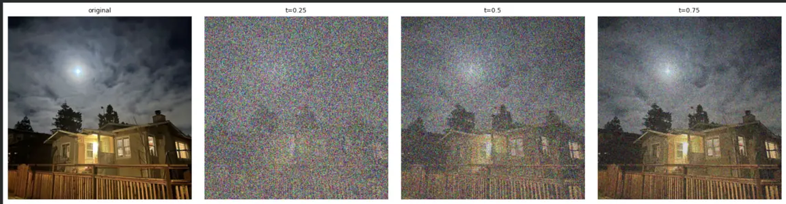
My baseline was Gaussian blur. Because the image signal is multiplied by t in the forward process, I first divided the noisy image by t, then blurred it. This restores the signal scale but it does not remove the noise on its own.
The tradeoff is visible immediately. With a large blur, the sky becomes smoother, but cloud edges, the roofline, and fence rails become soft as well. At the highest noise level, blur by itself struggles to recover anything crisp.
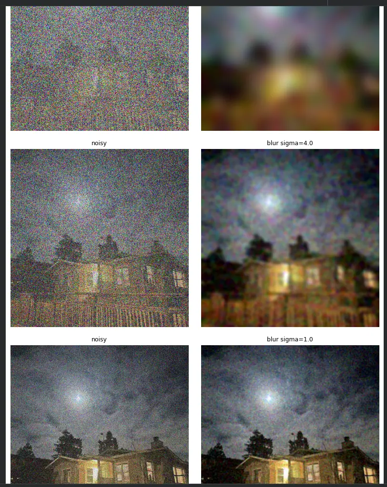
Instead of averaging nearby pixels, I asked PixNerd to predict the velocity from the noisy image toward the clean-image distribution. I then extrapolated straight to the endpoint in a single step.
At moderate noise levels the result looks much more photographic than the blurred baseline. The model reconstructs convincing roofs, windows, and sky texture. It is not necessarily a pixel-perfect reconstruction, though. Some objects shift because the network is predicting a plausible clean image rather than simply removing random grain.
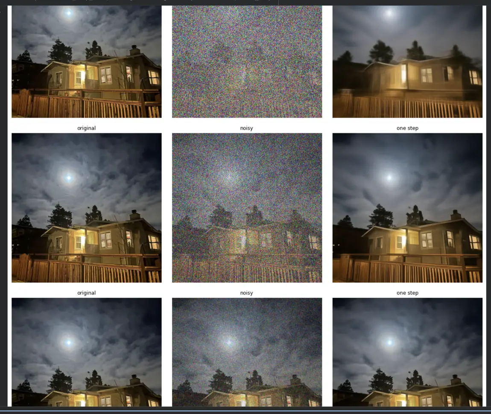
Here I compared the velocity that PixNerd predicted with the velocity I could compute exactly from my original photo and sampled noise. Each update is scaled by (1 − t), so the panels show what gets added to the current image.
The error heatmaps have bright outlines around building edges, trees, and the cloud boundaries. Those are precisely the regions where one plausible reconstruction can differ from the original. The error gets less prominent later on the flow path, when more of the original structure is already available.
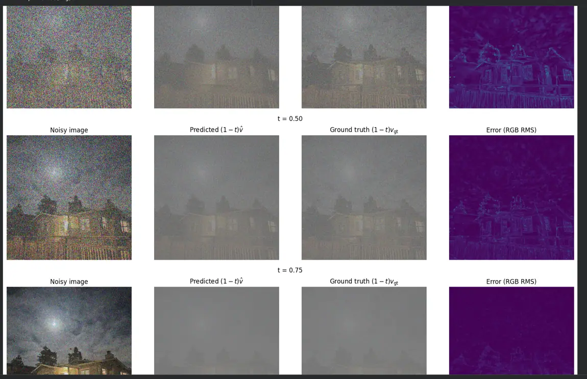
A straight jump to t = 1 assumes the velocity stays fixed. But the direction changes as the image changes, so I also tried repeatedly recomputing the prediction with Euler steps.
I started from the house at t = 0.5 and took 25 updates. The gradual recovery is much easier to understand in the trajectory than in one final image. Comparing the three methods made the difference clear: Gaussian blur smooths away detail, one-step prediction constructs a plausible image in one jump, and iterative sampling keeps updating the image as it moves toward the endpoint.
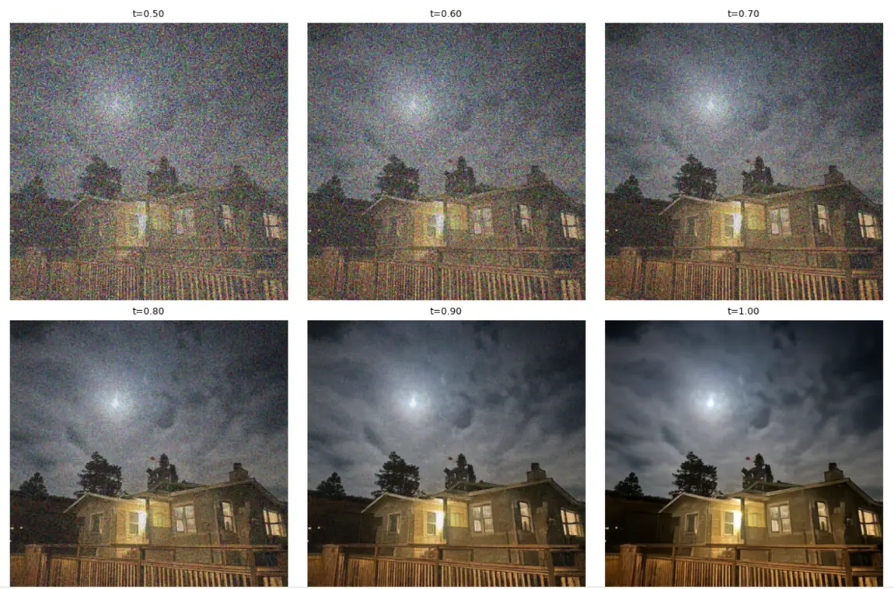
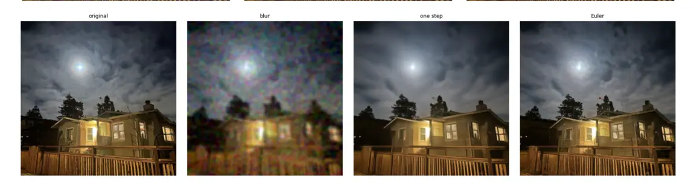
I then removed the starting photograph entirely. The sampler began with independent Gaussian noise and followed the learned flow to a generated image using the generic prompt “a high quality photo”.
The five samples have a noticeable preference for people and portrait photography. Some faces are coherent, while others have distorted or missing facial details. The model clearly knows something about the distribution of natural photographs, but the vague prompt gives it very little direction.
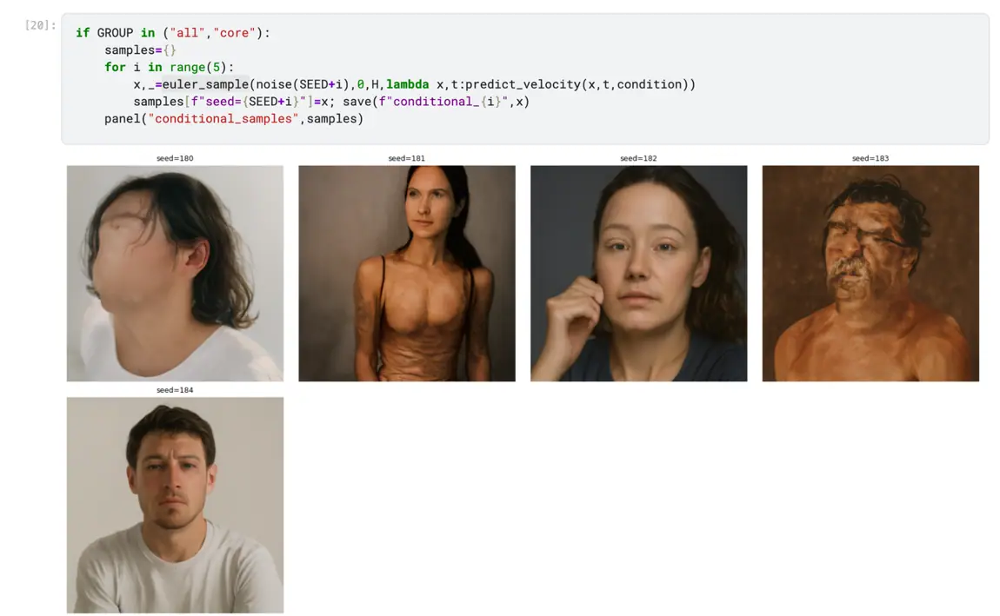
Classifier-free guidance evaluates both the conditional prompt and an empty prompt, then amplifies the difference. I used a guidance strength of w = 7 with the same initial seeds as before.
The output portraits are noticeably more structured, with more convincing eyes and cleaner facial boundaries. They also look more similar in composition. That is the tradeoff here: pushing harder toward the condition can help quality, but some diversity disappears.
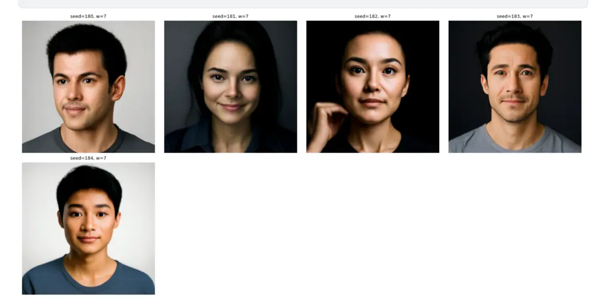
For editing, I kept the same noisy-interpolation idea but started the Euler sampler partway through the trajectory. I tried seven starting times: 0.02, 0.04, 0.06, 0.10, 0.14, 0.25, 0.50.
This is an unusually interesting parameter because smaller times mean more freedom, not more faithfulness. At t = 0.02, the model often has almost nothing left of the input and invents a completely new scene. By t = 0.5, the original object, colors, and layout usually survive.
In addition to the Campanile, I tested the nighttime house, a macro photograph of an eye, a web image of an orange cat, and drawings of Malfoy, Jeanne, and Keroppi. The flat drawings produced some of the stranger intermediate interpretations. The model sometimes interpreted illustrated shapes as real faces, objects, or fabric before recovering the original cartoon or drawing.
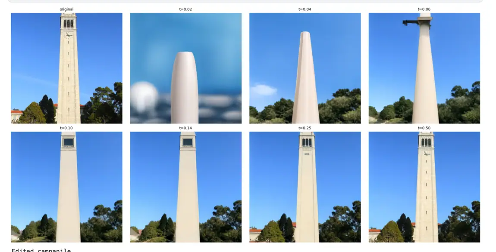
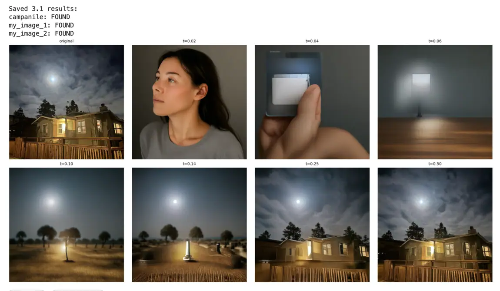
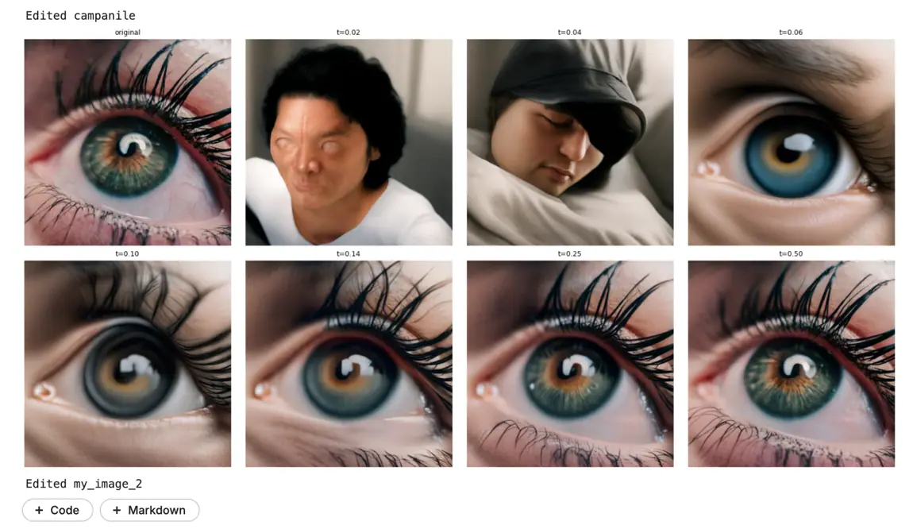
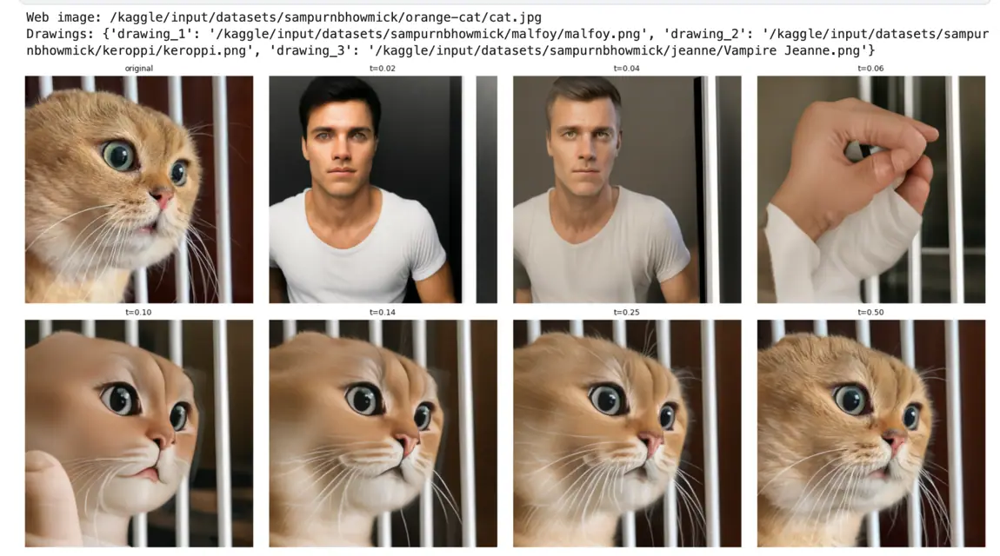
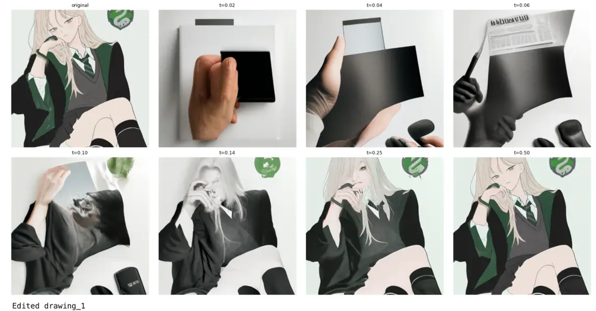
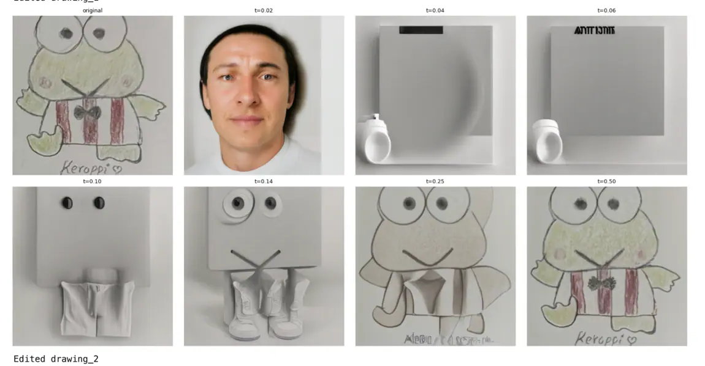
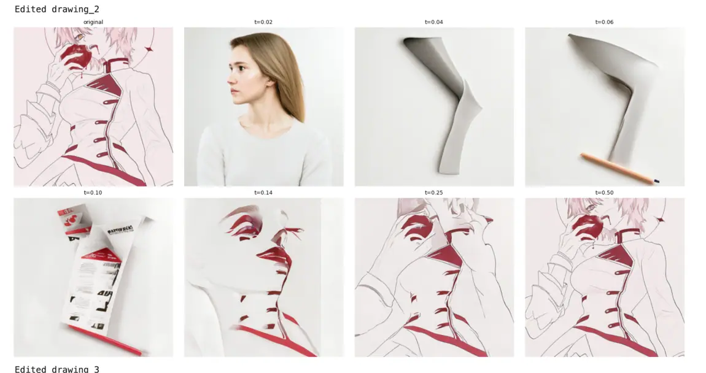
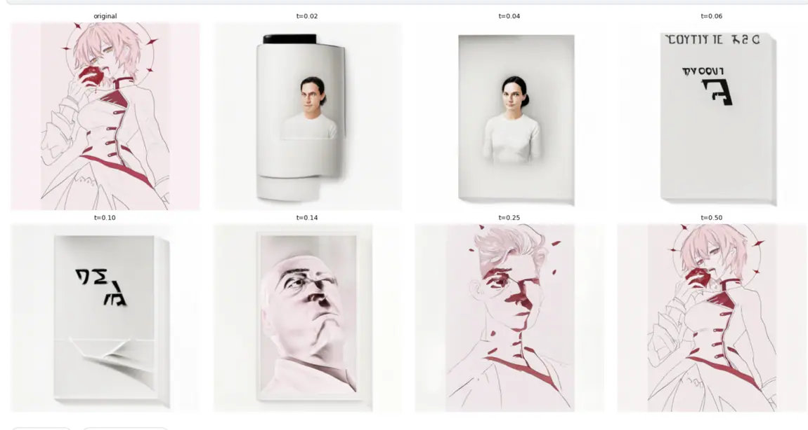
Here the editing algorithm stayed the same, but I replaced the generic photo condition with a specific text description. I tested all seven starting times again on the Campanile, house, and eye. My goal was to see how much the prompt could change the subject before the original image took over.
The Campanile is especially useful because its tall, narrow silhouette already resembles a rocket. At small t, text guidance has more room to alter the scene, while larger t retains the tower. I also experimented with a haunted-house direction for the nighttime photo and a cosmic or galaxy-like direction for the eye. The exact prompts are preserved in my notebook.
t means more rewriting. High t means more of the source photograph is preserved. The results are not a monotonic quality score. A dramatic edit can be creative even if it is less faithful.Awaiting the original saved result PNG from the Part A export. No substitute image has been used.
Awaiting the original saved result PNG from the Part A export. No substitute image has been used.
Awaiting the original saved result PNG from the Part A export. No substitute image has been used.
Visual anagrams ask one image to satisfy two different text descriptions: one upright and one after a 180-degree rotation. This is different from just combining two objects in one picture. The image has to change its apparent meaning when it is turned upside down.
I kept the two course examples and tried my own combinations. The black-cat-and-ocean-waves pair and the volcano-and-red-wine-glass pair were my favorites. In both, the second subject is easier to discover once the image is rotated. I also tried other combinations that did not work as convincingly, including an eye and moonlit sky.
A portrait and a group gathered around a fire, in two orientations.
An inversion between architecture, mountains and the animal's silhouette.
One of the custom pairs that worked especially well, shifting between an animal and moving water.
The triangular volcano and the tapered glass made an interesting rotational pairing.
The artwork panels load saved PNGs when this file sits beside the image archive in the project folder. Verify filename mappings against notebook outputs.
Hybrid images combine two different conditions by splitting the velocity field into low and high spatial frequencies. The first prompt is meant to dominate from a distance. The second becomes more obvious when I look closely.
I especially liked the hourglass paired with ocean waves and sand, along with a butterfly and stained glass. I also tried a human face and clockwork twice. The first run still read mostly as a face up close, so I rewrote the machinery prompt to ask for denser, sharper gears and mechanical parts.
That experiment was a useful reminder that prompts alone do not dictate how the frequencies divide. The spatial filter and the model's own visual biases matter too.
Broad skull structure with fine waterfall texture.
Animal silhouette combined with fine forest details.
Hourglass outline meets sand grains, foam and ocean texture.
Butterfly symmetry and detailed geometry of stained glass.
Human face remains prominent even up close.
Stronger instructions for cogs, spokes and mechanical details.
After exploring a pretrained generator, I built my own smaller model and trained it on handwritten digits.
Instead of borrowing a velocity field from a massive pretrained network, I trained a UNet to predict its own. MNIST makes each stage of the process easy to see: blurry averages, imperfect digits, then increasingly readable samples.
For Part B I stopped using a pretrained image generator and built a model in PyTorch. The starting point was a UNet for 28 × 28 MNIST digits. The encoder compresses the image into learned features, and the decoder builds it back up. Skip connections carry across fine details that would otherwise be lost during downsampling.
The basic operations included convolutions, pooling, transposed convolutions, reshaping, and channel-wise concatenation. I tested the forward pass and tensor shapes before training.
The first training task was ordinary supervised denoising. I corrupted clean MNIST digits with Gaussian noise, and the UNet predicted the original. The loss was pixel-wise mean squared error.
I trained at σ = 0.5 for five epochs and inspected both the training curve and sample reconstructions. Early predictions were smooth, but by the end the network could preserve recognizable digit shapes.
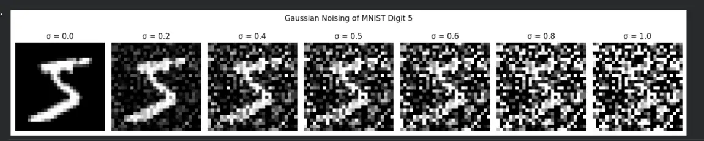
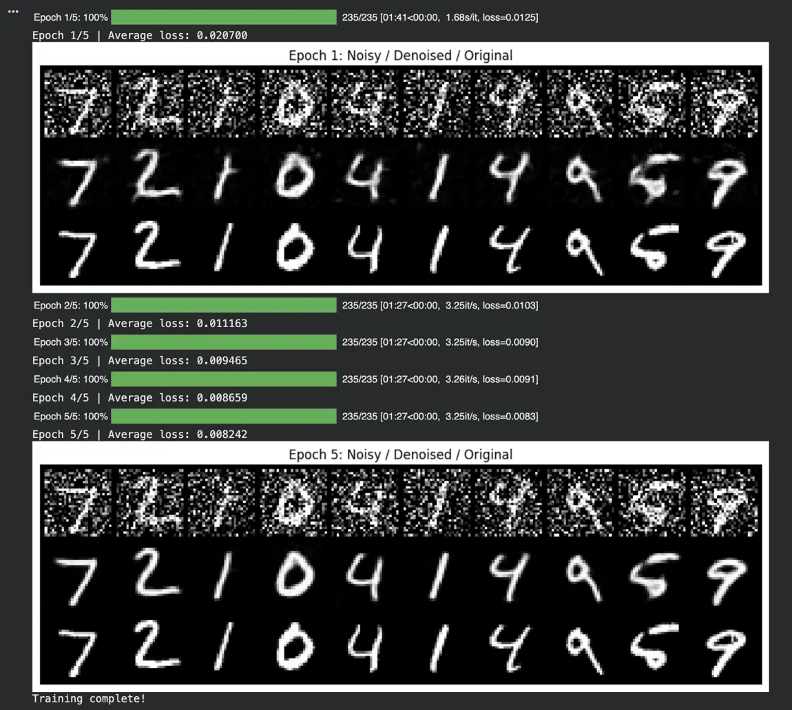
After training the denoiser on σ = 0.5, I fed it the same digit with different noise levels. The network held up around the training range and made larger errors as corruption increased. The seven remains recognizable over much of the sweep, but at the strongest noise levels the background becomes distracting and the reconstruction is less stable.
| Noise σ | MSE | Noise σ | MSE |
|---|---|---|---|
| 0.0 | 0.002119 | 0.5 | 0.005815 |
| 0.2 | 0.003006 | 0.6 | 0.006835 |
| 0.4 | 0.004797 | 0.8 | 0.009831 |
| 1.0 | 0.021646 |
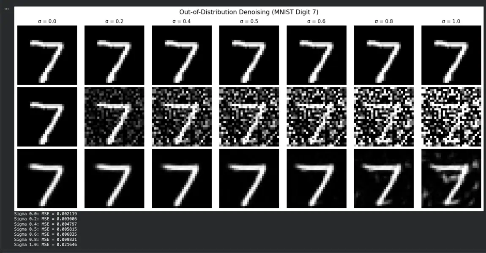
Then I trained a fresh UNet whose input was always completely random noise. This is much harder because the input contains no information about which digit it should produce.
After five epochs, the model mostly generated the same blurry digit-like shape across different seeds. The average training loss settled around 0.0674. That makes sense under MSE: if the input tells the network nothing about its target, predicting something close to the average of training digits minimizes squared error.
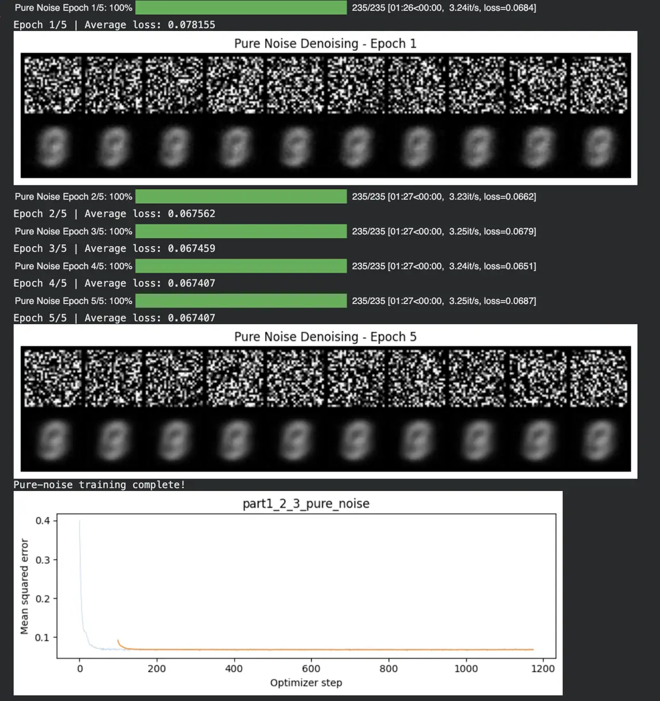
To turn the denoiser into a flow model, I added time conditioning. Instead of asking the network for a clean image directly, I asked for the velocity at a particular point along a path from noise to data.
A scalar t passes through learned fully connected blocks and modulates features at different points in the UNet. In my shape test, two 28 × 28 inputs produced two 28 × 28 velocity predictions. The time-conditioned network had 1,996,417 parameters.
I trained the time-conditioned model with randomly selected digits, Gaussian noise, and timesteps. The target was the displacement from noise to the clean digit, not the noise itself.
With an initial learning rate of 0.01 and an exponential scheduler, average training loss decreased from 0.166770 after epoch 1 to 0.092108 after epoch 10. Most of the improvement happened early, then the curve flattened.
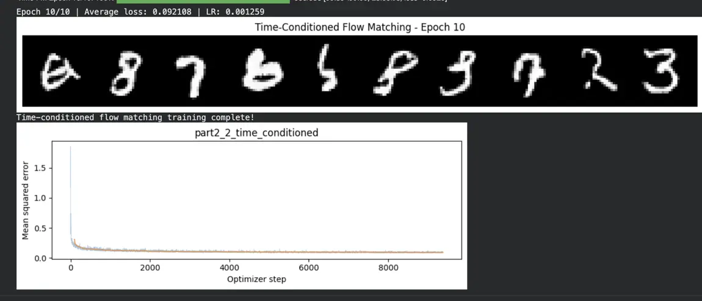
At generation time, I started from noise and took repeated Euler steps with the learned velocity field. The first epoch's digits were distorted and hard to identify. By epoch five, many were legible. By epoch ten, the model produced recognizable handwritten numbers, although the writing styles were sometimes unusual.
Unlike the single-step pure-noise experiment, different noise tensors can now lead to different digit shapes.
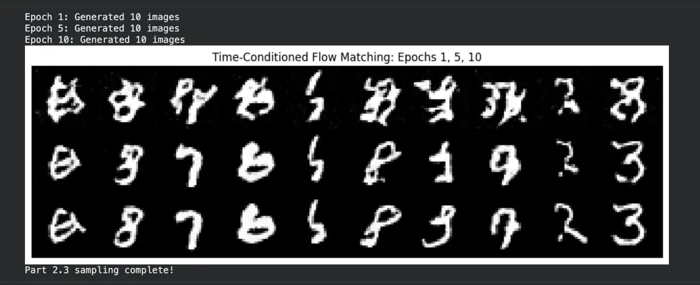
I gave the network the digit label as an additional input. The class was represented as a one-hot vector and injected with fully connected conditioning blocks. I also occasionally dropped the class signal so the network could learn both conditional and unconditional predictions.
The model passed the forward, backward, conditioning-mask and sampling tests. Its parameter count was 2,019,201.
The class-conditioned model trained for ten epochs. With exponential learning-rate decay, the average loss fell from 0.169802 to 0.084653.
The extra signal tells the model which of the ten digit classes to produce. That removes a source of ambiguity and makes generation more controllable.
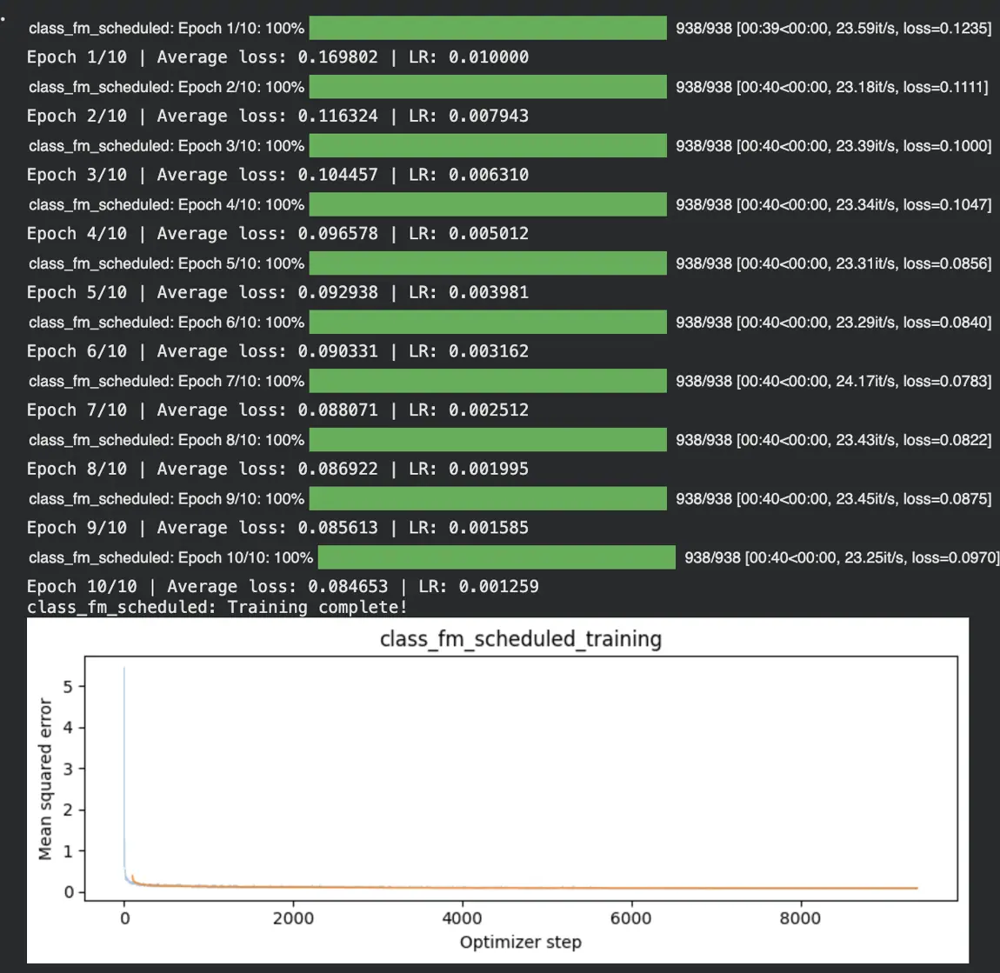
For conditional sampling, I generated four examples of each digit, from 0 to 9, using classifier-free guidance. Then I compared the exponential learning-rate schedule with a simpler constant-rate run.
The scheduled model ended at an average loss of 0.084653. The alternative kept the learning rate fixed at 0.002 and finished at 0.086311. The scheduled run had a slightly lower loss, but both generated recognizable labeled digits. The constant-rate approach was competitive without the scheduler.
I found the image grids as useful as the loss curves. A small advantage in training MSE does not always translate into an obvious difference in every individual digit.
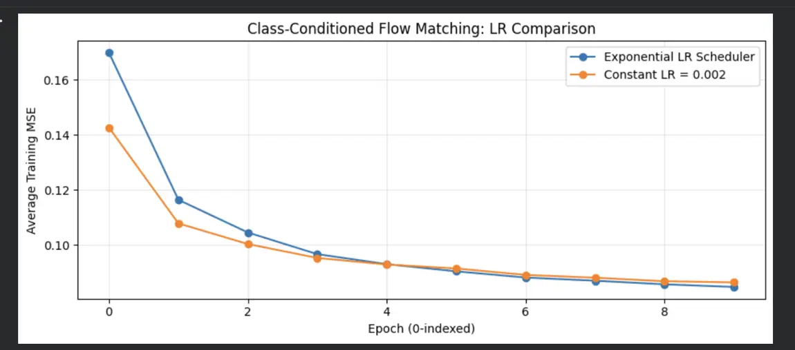
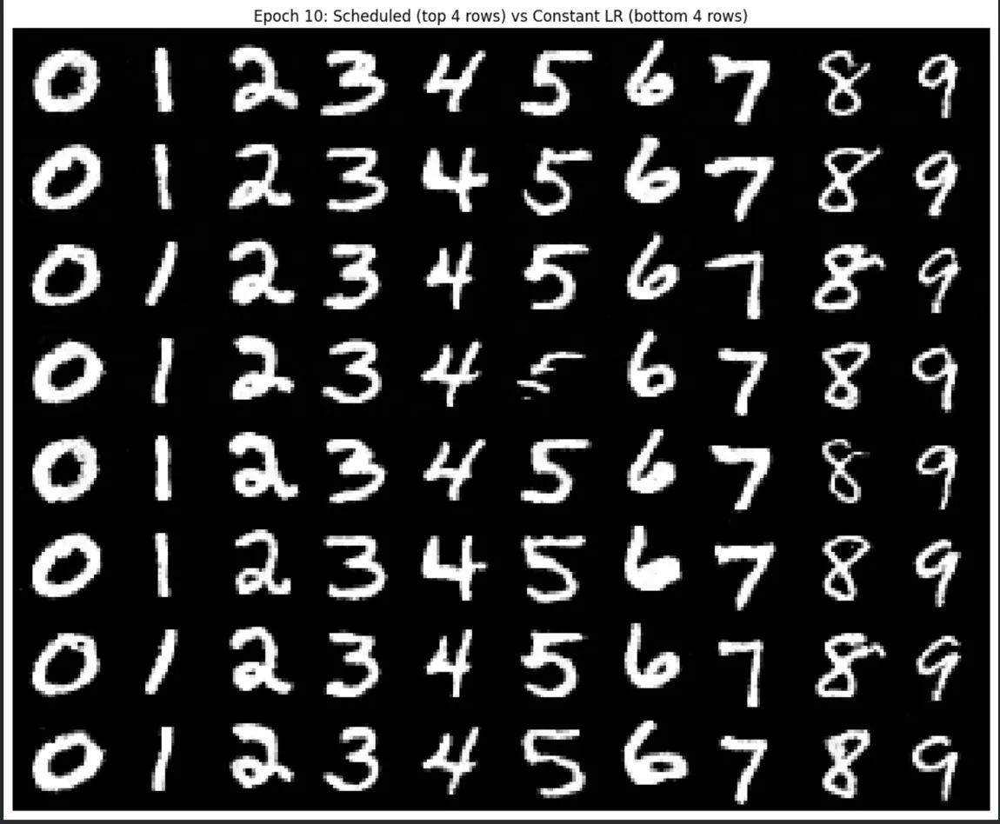
There is a real difference between removing noise and generating an image. Blurring can suppress variation without restoring detail, and a one-step model can produce plausible structures without following the original exactly. Flow matching takes another route: learn a direction at each timestep, then move through the image space a little at a time.
Part A made that process visible in photographs and creative illusions. Part B made the mechanics more tangible. Time conditioning turned a static denoiser into a generator, while class conditioning gave it the ability to follow instructions as simple as a digit label.